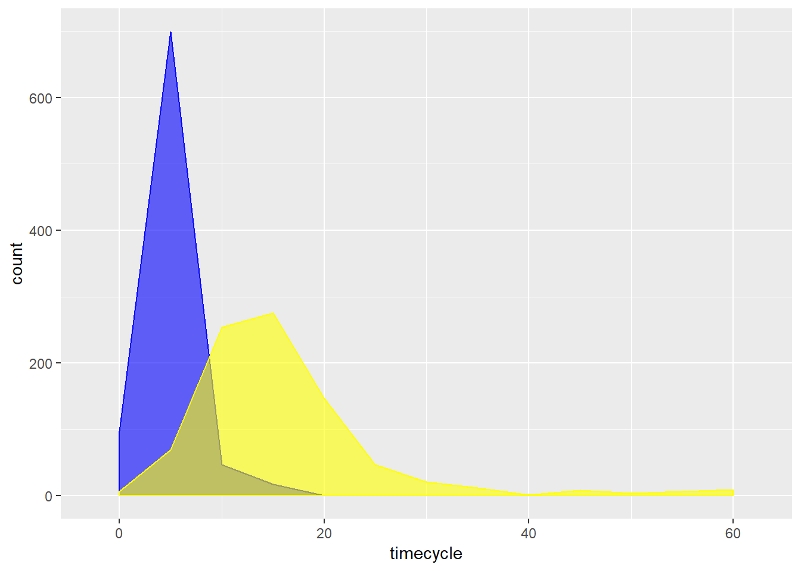
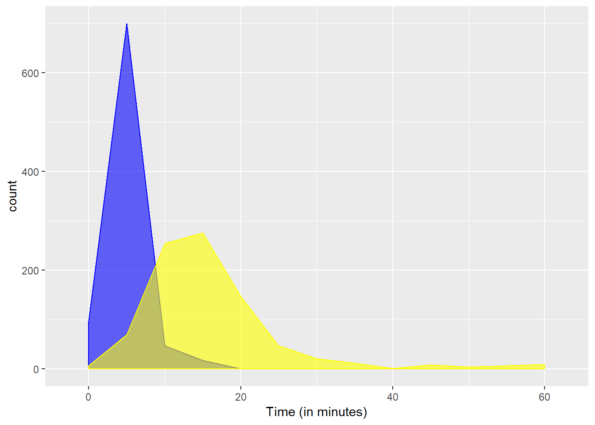
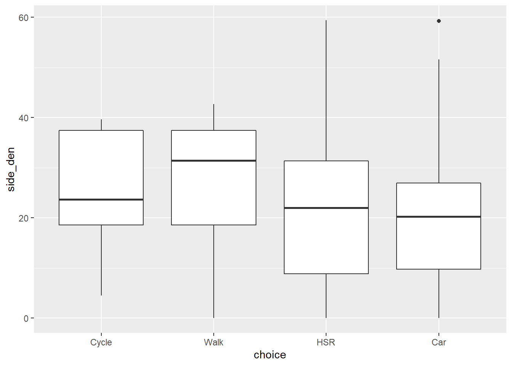

Chapter 3 Data and stuff
“Essentially, all models are wrong, but some are useful.”
— George E.P. Box
“You can have data without information, but you cannot have information without data.”
— Daniel Keys Moran
3.1 What are models?
Model building requires three things:
Raw materials.
Tools.
Technical expertise (hopefully!).
This is true whether the model is physical (for instance a sculpture), conceptual (a mental map), or statistical/mathematical (the gravity model or a regression model).
In the case of a sculpture, the raw materials can be marble, wood, or clay; the tools chisels, mallet, and spatula; and the technique the mastery of the sculptor when working with the tools and the materials. Anyone can try sculpture, and most people can create sculptures. These kind of models are evaluated by their aesthetic value, not necessarily their usefulness. But if the scultpure is poorly balanced and falls and breaks, then its value is limited by its structural integrity - the skill of the sculptor matters even if only in this sense.
In the case of a mental map, the raw materials are ideas, the tools are a drawing surface and tools for writing, or maybe an app, and the technical expertise is the ability of the modeler to organize ideas in a useful way. There are useful conceptual models, and conceptual models that are anything but. Figure 3.1 shows two example of conceptual models.
Figure 3.1: Two Examples of Conceptual Models
In the case of mathematical/statistical models, the raw materials are data; the tools are descriptive statistics and statistical plots, and various forms of regression analysis; and the technical expertise is the ability of the modeler to select tools that are appropriate to the data, and to convince the data to “speak”: in other words, to extract information from the data. As Moran said in the aphorism quoted at the top of this section: you can have data without information, but no information without data. Technical mastery is the degree to which a modeller can obtain information from data that is useful, accurate, and precise, to the extent that the raw materials permit.
Before moving on to the technical skills required for modeling, it is important to understand the raw materials and the tools. The objective of this note is to introduce some important concerning data and data manipulation, and some useful tools.
3.2 How to use this note
The source for the document you are reading is an R Notebook. Notebooks are a form “literate programming”, a style of document that uses code to illustrate a discussion, as opposed to the traditional programming style that uses natural language to discuss/document the code. It flips around the usual technical writing approach to make it more intuitive and accessible.
Throughout the notes, you will find examples of code in segments of text called chunks. This is an example of a chunk:
print("Hello, Discrete Choice Analysis!")## [1] "Hello, Discrete Choice Analysis!"If you are working with the Notebook version of the document, you can run the code by clicking the ‘play’ icon on the top right corner of the chunk. If you are reading the web-book version of the document, you will often see that the code has already been executed. You can still try it by copying and pasting into your R or RStudio console. Whichever way you are working, you might want to give it a try now! You will see that the chunk of code above instructed R (and trough R the computer) to print (or display on the screen) some text.
3.3 Learning objectives
In this practice, you will learn about:
- Different ways to measure stuff.
- Basic operations in R.
- Data classes, data types, and data transformations.
- The use of packages in R.
- Basic visualization.
3.4 Suggested readings
- Grolemund, G., Wickham, H. (2016) R for Data Science, Chapters 3-5, O’Reilly Media.
3.5 Ways of measuring stuff
Previously we said that data are the raw material for modeling, but we did not say precisely what we meant by ‘data’. You probably already have a working understanding of what ‘data’ means, but nonetheless lets begin with a definition. According to Mirriam-Webster, data are:
factual information (such as measurements or statistics) used as a basis for reasoning, discussion, or calculation
As an aside, it is interesting to note that Tukey’s classic Exploratory Data Analysis (Tuckey 1977) does not define ‘data’ in the glossary!
Measurement theory is a branch of mathematics concerned with observing the facts about something. It is important to note that measurements are not the same as the thing being measured; however, we would like the measurements to be a reasonably close approximation of the thing being measured - otherwise the measurements might be pretty useless, an inadequate way to learn anything valuable from the thing we are measuring.
One fundamental contribution of the scientific method has been to produce standardized ways of measuring things. How would you measure the following things?
- The temperature at which water freezes.
- The tempreature at which nitrogen freezes.
- The length of a trip.
- Blood donations.
- Different brands of peanut butter.
- The value of two bedroom apartment.
- Someone’s opinion regarding taxes.
Generally, there are multiple ways of measuring something, but not all of them are necessarily appropriate, partly because the scales of measurement may result in some loss of information. The interpretation of a measurement, as well, depends on what the scale is.
Two broad scales of measurement are as follows:
3.5.1 Categorical
Categorical measurements assign a label or category to the thing being measured. For example, a way to measure different brands of peanut butter could be to measure their sugar content, their fat content, their consistency, and so on, and in this way describe what makes each brand unique. A different way to do this would be to label one brand “Spooky” and another “Peter’s”. This has the effect of reducing a lot of information to a much simpler category. Is this loss of information inappropriate? Well, it really depends on what is the intended use of data! Categorical measurements are interesting because they may tell us something about the power of brands!
Within the class of categorical variables there are two distinct scales of measurement:
Nominal scale. When the categories do not follow a natural order. For example, there is no reason to say that “Spooky” brand precedes “Peter’s” or vice versa. Similarly, when measuring modes of travel “walking” is not intrinsically higher or lower or better or worse than “cycling” or “riding bus”.
Ordinal scale. When the categories follow a natural or logical sequence. A common way of measuring opinions is by means of the Likert scale, which classifies responses for instance as “strongly disagree”, “disagree”, “neutral”, “agree”, “strongly agree”. In this case, it is sensible to order the responses, since “strongly agree” is probably closer to “agree” than to “strongly disagree”. Responses of this type are often represented by numbers, say, from 1 to 5. It is a mistake to treat the measurements as numbers instead of lables. When treated as numbers there is a temptation to thing of the difference between 4 and 5 and the difference between 3 and 4 as being equivalent, when in fact the strength of disagreement could be stronger than the strength of agreement. In other words, the interval between “strongly disagree” and “disagree” may not be the same as “agree” and “strongly agree”. With ordinal scales we do not know that, all that we know is that they measure a different opinion.
Sometimes, different measurement scales might represent different behavioral mechanisms, as Bhat and Pulugurta discuss in their comparison of categorical and ordinal measurements for vehicle ownership (Bhat and Pulugurta 1998).
3.5.2 Quantitative
Quantitative measurements assign a number to an attribute, and the number quantifies the presence of the attribute. Within this class of variables, there are also two ways of measuring things.
Interval scale. A quantity can be assigned to an attribute, the values follow an order, and their differences can be computed and remain constant. Temperature is typically measured in interval scale. The difference between \(10\,^{\circ}\mathrm{C}\) and \(11\,^{\circ}\mathrm{C}\) is the same as the difference between \(25\,^{\circ}\mathrm{C}\) and \(26\,^{\circ}\mathrm{C}\). The intervals are meaningful. However, \(0\,^{\circ}\mathrm{C}\) does not imply the absence of temperature! Which is why measurements in Celsius and Farenheit do not coincide at zero. The lack of a natural zero for these scales means that the ratios between two values are not meaningful: \(4\,^{\circ}\mathrm{C}\) is not twice as hot as \(2\,^{\circ}\mathrm{C}\), and \(-12\,^{\circ}\mathrm{C}\) is not four times as cold as \(-3\,^{\circ}\mathrm{C}\).
Ratio scale. When there is an absolute value of zero to the thing being measured (to indicate absence!), attributes can be measured in a ratio scale. This combines the features of the previous scales of measurement: a number is esentially a label that follows a logical order and with differences that are meaningful. In addition to that, the ratios of variables are meaningful. For example, twenty dollars are twice as valuable as ten, and zero is the absence of value. Weight is a way of measuring mass, and zero is the absence of mass. Two hundred kilograms is twice as much as one hundred kilograms.
It is important to understand the different scales of measurement to be able to choose the appropriate tools for each. More on this below. But first, lets bring some actual data to play with.
3.6 Importing data
There are several different ways of importing data in R. For this example, we will use part of a dataset that was analyzed by Whalen et al. (Whalen, Páez, and Carrasco 2013).
At the very beginning, it is good practice to clear the workspace, to ensure that there are no extraneous items there. The workspace is where objects reside in memory during a session with R. The function for removing variables from the workspace is rm(). Another useful function is `ls, which retrieves a list of things in the workspace. So essentially we are asking R to remove all things in the workspace:
rm(list = ls())Once that the workspace is empty, we can proceed to load a few packages that are useful. Packages are the basic units of reproducible code in the R multiverse. Packages allow a developer to create a self-contained unit of code that often is meant to achieve some task. For instance, there are packages in R that specialize in statistical techniques, such as cluster analysis, visualization, or data manipulation. Some packages can be miscellaneous tools, or contain mostly datasets. Packages are a very convenient way of maintaining code, data, and documentation, and also of sharing all these resources.
Packages can be obtained from different sources (including making them!). One of the reasons why R has become so successful is the relative facility with which packages can be distributed. A package that I use frequently is called tidyverse. The tidyverse is a collection of functions for data manipulation, analysis, and visualization. This package can be downloaded and installed in your personal library of R packages by using the function install.packages, as follows:
install.packages("tidyverse")The function install.packages retrieves packages from the Comprehensive R Archive Network, or CRAN for short. CRAN is a collection of sites (accessible via the internet) that carry identical materials for distribution for R.
Installing a package is similar to acquiring a book for your library. The book is there, but if you want to use it, you need to bring it to your workspace, so to speak. The function for retrieving a package from the library is naturally enough library(). For the moment, we need the following packages. If you have not done so, take a moment to install them, as illustrated in the previous chunk.
library(tidyverse)
library(readr)
#library(caret)
library(mlogit)Ocassionally there are messages displayed when loading a package. These messages are informative (they ask you to cite them in a certain style) or may give you warnings, for instance that identically named functions exist in several packages.
The function that we need to read the sample dataset is read_csv(), which is part of the tidyverse package. Note that you can name the value (or output) of a function by using <-. In this case, we wish to read an external file, and assign the results to an object called mc_mode_choice:
mc_mode_choice <- read_csv("Commute Mac.csv")## Parsed with column specification:
## cols(
## .default = col_double()
## )## See spec(...) for full column specifications.It is possible to quickly examine the contents of the object by means of the function head(), which prints the top few rows of the object, if appropriate. For example:
head(mc_mode_choice)## # A tibble: 6 x 39
## RespondentID choice avcycle avwalk avhsr avcar timecycle timewalk
## <dbl> <dbl> <dbl> <dbl> <dbl> <dbl> <dbl> <dbl>
## 1 566872636 3 0 1 1 0 6.21 21.3
## 2 566873140 3 0 1 1 1 3.73 12.8
## 3 566874266 3 0 0 1 1 100000 100000
## 4 566874842 2 1 1 1 0 5.83 20
## 5 566881170 2 1 1 1 0 5.83 20
## 6 566907438 2 0 1 1 0 100000 10
## # ... with 31 more variables: accesshsr <dbl>, waitingtimehsr <dbl>,
## # transfer <dbl>, timehsr <dbl>, timecar <dbl>, parking <dbl>,
## # vehind <dbl>, owncycle <dbl>, gender <dbl>, work <dbl>, visa <dbl>,
## # age <dbl>, solo <dbl>, shared <dbl>, family <dbl>, child <dbl>,
## # primary_caregiver <dbl>, LAT <dbl>, LONG <dbl>, DAUID <dbl>,
## # mhi <dbl>, dwell_den <dbl>, lum <dbl>, st_den <dbl>, inter_den <dbl>,
## # SF_P_ratio <dbl>, side_den <dbl>, Shelters_SD <dbl>, Shelters_D <dbl>,
## # Shelters_A <dbl>, Shelters_SA <dbl>Here we can see that what we just read is a table with several variables: an id, a variable called choice, some variables for time, etc. Hopefully, when reading data there is also a metadata file, a data dictionary or something that defines what the data are. For example, what does it mean for choice to be “3” or “1”? Was time measured in hours, seconds, minutes, or something else? These variables will be described below. Before that, however, we can use a different function to get further insights into the contents of the table by means of the summary() function:
summary(mc_mode_choice)## RespondentID choice avcycle avwalk
## Min. :566872636 Min. :1.000 Min. :0.0000 Min. :0.0000
## 1st Qu.:567814188 1st Qu.:2.000 1st Qu.:0.0000 1st Qu.:0.0000
## Median :568682048 Median :2.000 Median :0.0000 Median :1.0000
## Mean :570566454 Mean :2.618 Mean :0.2747 Mean :0.6613
## 3rd Qu.:574925212 3rd Qu.:3.000 3rd Qu.:1.0000 3rd Qu.:1.0000
## Max. :587675235 Max. :4.000 Max. :1.0000 Max. :1.0000
## avhsr avcar timecycle timewalk
## Min. :0.0000 Min. :0.0000 Min. : 0.29 Min. : 1.00
## 1st Qu.:1.0000 1st Qu.:0.0000 1st Qu.: 3.79 1st Qu.: 13.66
## Median :1.0000 Median :1.0000 Median : 5.83 Median : 20.00
## Mean :0.9608 Mean :0.5472 Mean : 34014.86 Mean : 37364.73
## 3rd Qu.:1.0000 3rd Qu.:1.0000 3rd Qu.:100000.00 3rd Qu.:100000.00
## Max. :1.0000 Max. :1.0000 Max. :100000.00 Max. :100000.00
## accesshsr waitingtimehsr transfer timehsr
## Min. : 0.00 Min. : 0.00 Min. : 0 Min. : 1.00
## 1st Qu.: 2.48 1st Qu.:10.23 1st Qu.: 0 1st Qu.: 4.75
## Median : 6.21 Median :10.23 Median : 0 Median : 10.00
## Mean :11.06 Mean :10.25 Mean : 3925 Mean : 3940.57
## 3rd Qu.:12.42 3rd Qu.:10.23 3rd Qu.: 1 3rd Qu.: 25.00
## Max. :62.11 Max. :50.00 Max. :100000 Max. :100000.00
## timecar parking vehind owncycle
## Min. : 1 Min. :0.00000 Min. :0.0000 Min. :0.0000
## 1st Qu.: 8 1st Qu.:0.00000 1st Qu.:0.0000 1st Qu.:0.0000
## Median : 30 Median :0.00000 Median :0.0000 Median :0.0000
## Mean : 45283 Mean :0.08358 Mean :0.2565 Mean :0.4513
## 3rd Qu.:100000 3rd Qu.:0.00000 3rd Qu.:1.0000 3rd Qu.:1.0000
## Max. :100000 Max. :1.00000 Max. :1.0000 Max. :1.0000
## gender work visa age
## Min. :0.0000 Min. :0.000 Min. :0.0000 Min. :17.00
## 1st Qu.:0.0000 1st Qu.:0.000 1st Qu.:1.0000 1st Qu.:20.00
## Median :0.0000 Median :0.000 Median :1.0000 Median :21.00
## Mean :0.4012 Mean :0.492 Mean :0.9622 Mean :22.08
## 3rd Qu.:1.0000 3rd Qu.:1.000 3rd Qu.:1.0000 3rd Qu.:23.00
## Max. :1.0000 Max. :1.000 Max. :1.0000 Max. :60.00
## solo shared family child
## Min. :0.0000 Min. :0.000 Min. :0.0000 Min. :0.0000
## 1st Qu.:0.0000 1st Qu.:0.000 1st Qu.:0.0000 1st Qu.:0.0000
## Median :0.0000 Median :1.000 Median :0.0000 Median :0.0000
## Mean :0.1272 Mean :0.625 Mean :0.2478 Mean :0.2115
## 3rd Qu.:0.0000 3rd Qu.:1.000 3rd Qu.:0.0000 3rd Qu.:0.0000
## Max. :1.0000 Max. :1.000 Max. :1.0000 Max. :1.0000
## primary_caregiver LAT LONG DAUID
## Min. : 0 Min. :43.08 Min. :-80.09 Min. :35250031
## 1st Qu.:100000 1st Qu.:43.25 1st Qu.:-79.92 1st Qu.:35250540
## Median :100000 Median :43.26 Median :-79.91 Median :35250670
## Mean : 75218 Mean :43.25 Mean :-79.90 Mean :35250612
## 3rd Qu.:100000 3rd Qu.:43.26 3rd Qu.:-79.90 3rd Qu.:35250677
## Max. :100000 Max. :43.28 Max. :-79.64 Max. :35250970
## mhi dwell_den lum st_den
## Min. : 0.000 Min. : 0.0 Min. :0.0000 Min. : 0.00
## 1st Qu.: 4.577 1st Qu.: 488.7 1st Qu.:0.2808 1st Qu.:10.36
## Median : 5.491 Median : 950.0 Median :0.4501 Median :14.29
## Mean : 6.168 Mean : 1373.0 Mean :0.4183 Mean :13.27
## 3rd Qu.: 7.556 3rd Qu.: 1688.6 3rd Qu.:0.5038 3rd Qu.:16.18
## Max. :14.595 Max. :45209.9 Max. :0.9081 Max. :25.22
## inter_den SF_P_ratio side_den Shelters_SD
## Min. : 0.00 Min. :0.0000 Min. : 0.00 Min. :0.00000
## 1st Qu.: 25.82 1st Qu.:0.2309 1st Qu.:18.19 1st Qu.:0.00000
## Median : 41.04 Median :0.2709 Median :22.63 Median :0.00000
## Mean : 52.09 Mean :0.2625 Mean :24.18 Mean :0.04433
## 3rd Qu.: 73.08 3rd Qu.:0.3134 3rd Qu.:35.70 3rd Qu.:0.00000
## Max. :645.86 Max. :0.8808 Max. :59.41 Max. :1.00000
## Shelters_D Shelters_A Shelters_SA
## Min. :0.0000 Min. :0.0000 Min. :0.00000
## 1st Qu.:0.0000 1st Qu.:0.0000 1st Qu.:0.00000
## Median :0.0000 Median :0.0000 Median :0.00000
## Mean :0.2289 Mean :0.3576 Mean :0.02762
## 3rd Qu.:0.0000 3rd Qu.:1.0000 3rd Qu.:0.00000
## Max. :1.0000 Max. :1.0000 Max. :1.00000This function will print a set of summary statistics for the variables in the table. The statistics are appropriate for the scale of measurement of the variable - that is, the way the variable is coded. Presently, all summary statistics are calculated for quantitative variables. We don’t know if this makes sense, until we know what the variables are supposed to measure.
For example, the variable choice measures the use of one mode of transportation. There are four values in this scale: 1 through 4, with each indicating one of “Cycle”, “Walk”, “Car”, or “HSR” (the local transit agency in Hamilton, ON, Canada, where these data were collected). Check the results of the summary. What does it mean to say that the mean of choice is 2.618? Does this number make sense?
3.7 Data Classes in R
To understand why 2.618 of mode of transportation is not an appropriate summary measure for the variable mode, we need to know that R can work with different data classes, which include the following:
- Numerical
- Character
- Logical
- Factor
The ability to store information in different forms is important, because is allows R to distinguish what kind of operations are appropriate for a certain variable. Consider the following example (using indexing):
mc_mode_choice$choice[1] - mc_mode_choice$choice[4]## [1] 1Lets unpack what the chunk above did. First, we call our table mc_mode_choice. The string sign $ is used to reference columns in the table. Therefore, we asked R to go and look up the column choice in the table mc_mode_choice. Finally, the value between square brackets [] asks R to retrieve a value out of the column, in this example the first value in that column and then the fourth value. This system of referring to elements in tables is called indexing. Most computer languages use it, but the syntax is different. Again: $ refers to a column, and [] is used to call values in that column.
As we can see, the difference between the two values retrieved is \(1\). But what is the meaning of “cycle” minus “walk”, for instance?
In reality, the variable choice was measured as a nominal variable: it just corresponds to a label indicating what mode was chosen by a respondent. But R does not know this. Before R can treat it as a nominal variable, the numbers need to be converted to a factor. Factors are the way R stores categorical variables (both nominal and ordinal). To convert the variable choice to a factor, we use the factor() function:
mc_mode_choice$choice <- factor(mc_mode_choice$choice, labels = c("Cycle", "Walk", "HSR", "Car"))In the chunk above, we ask R to replace the contents of mc_mode_choice$choice with the value (output) of the function factor. Factor takes the contents of mc_mode_choice$choice and converts to a factor with labels as indicated by the argument labels = (the function c() is used to concatenate several values).
Lets summarize the result, by using the summary() function but only for this variable:
summary(mc_mode_choice$choice)## Cycle Walk HSR Car
## 48 711 336 281Now the summary is appropriate categorical variable, and is a table of frequencies: as seen there, there were 48 respondents who chose “Cycle”, 711 who chose “Walk”, and so on. What if we tried to calculate the difference?
mc_mode_choice$choice[1] - mc_mode_choice$choice[4]## Warning in Ops.factor(mc_mode_choice$choice[1], mc_mode_choice$choice[4]):
## '-' not meaningful for factors## [1] NAThe message indicates that the operation we tried to perform is not meaningful for factors. As long as R knows the appropirate measurement scale for your variables, it will try to steer you away from doing silly things with them.
Other variables included in this table are for time. These variables measure the duration in minutes (actual or imputed) for trips by different modes. For example, timecycle is the duration of a trip by bicycle for the journey reported by the respondent.
Lets summarize this variable again:
summary(mc_mode_choice$timecycle)## Min. 1st Qu. Median Mean 3rd Qu. Max.
## 0.29 3.79 5.83 34014.86 100000.00 100000.00Notice that the shortest trip by bicycle would be less than a minute long, whereas the maximum is \(100,000\) minutes long. Wait, what? That is over \(1,600\) hours long. Is that even possible? In fact, no, it is not. The reason for these values is that when the original data were coded, whenever a respondent said that cycling was not a mode that was available to them, the time was coded as a very large and distinctive value. There were no trips taking \(100,000\) minutes, this is just a code for “information not available”. One problem with this manner of coding is that R does not know that the information is actually missing, but rather thinks it is a legitimate quantity. As a consequence, the mean is tens of thousands of minutes, despite the fact that half of all trips by bicycle were measured at less than 6 minutes long (see the median).
Next we will see a way to address this. One last thing before doing so: you can check the class an object with the function class
class(mc_mode_choice$choice)## [1] "factor"class(mc_mode_choice$timecycle)## [1] "numeric"3.8 More on indexing and data manipulation
Indexing is a way of making reference to elements in a data object. There are numerous indexing methods in R that are appropriate for specific objects. Tables such as mc_mode_choice (called data frames) can be indexed in a few different ways. For example the next three chunks are equivalent in that they call the second column (choice) and in that column the second element:
mc_mode_choice[2, 2]## # A tibble: 1 x 1
## choice
## <fct>
## 1 HSRmc_mode_choice$choice[2]## [1] HSR
## Levels: Cycle Walk HSR Carmc_mode_choice[["choice"]][2]## [1] HSR
## Levels: Cycle Walk HSR CarIt is also possible to index by ranges of values. For example, the next chunks retrieves rows 2 to 5 from columns 7 and 8:
mc_mode_choice[2:5, 7:8]## # A tibble: 4 x 2
## timecycle timewalk
## <dbl> <dbl>
## 1 3.73 12.8
## 2 100000 100000
## 3 5.83 20
## 4 5.83 20Indexing is useful to subset data selectively. For example, we know that travel times coded as \(100,000\) are actually cases where the corresponding mode was not available. Lets say that we wanted to summarize travel time by bicycle but without those cases. We can use logical statements when indexing. We could tell R to retrieve only those values that meet a certain condition. In the next chunk, we save the results of this to a new variable:
time.Cycle.clean <- mc_mode_choice$timecycle[mc_mode_choice$timecycle != 100000]where != is R for not. In other words, “find all values not 100000, and retrieve them”.
The result of this is a numeric object:
class(time.Cycle.clean)## [1] "numeric"If we summarize this object now:
summary(time.Cycle.clean)## Min. 1st Qu. Median Mean 3rd Qu. Max.
## 0.2914 2.9141 4.3711 4.8957 5.8282 45.0000The summary statistics are much more sensible: the longest trip by bicycle was measured at 45 minutes, and the mean trip at less than 5 minutes.
Indexing is a powerful technique, but can be cumbersome (mc_mode_choice$timecycle[mc_mode_choice$timecycle != 100000]!). The package dplyer (part of the tidyverse) provides a grammar for data manipulation that is more intuitive. We will explore three of its elements here, namely the pipe operator (%>%), select, and filter.
Suppose that we wanted to select two of the time variables, for cycling and walking, and wanted to retrieve only values other than the offending \(100,000\), and save these values in a new object called time.Active.clean. In the grammar of dplyr, this is done as follows:
time.Active.clean <- mc_mode_choice %>%
select(c("timecycle", "timewalk")) %>%
filter(timecycle != 100000 & timewalk != 100000)In natural language this would be something like “take mc_mode_choice and select columns timecycle and timewalk; pass the result to filter and retrieve all rows that meet the conditions timecycle != 100000 AND timewalk != 100000”. The verb select is used to select columns from a data frame, and the verb filter to filter rows.
The alternative, using indexing would look something like this:
time.Active.clean.the.hard.way <- mc_mode_choice[mc_mode_choice$timecycle != 100000 & mc_mode_choice$timewalk != 100000, 7:8]The expression becomes more convoluted and not as easy to read. It is also easier to make mistakes when writing it.
Compare the summaries of the two data frames, to make sure that they are identical:
summary(time.Active.clean)## timecycle timewalk
## Min. : 0.2914 Min. : 1.00
## 1st Qu.: 2.9141 1st Qu.:10.00
## Median : 4.3711 Median :15.00
## Mean : 4.5852 Mean :16.10
## 3rd Qu.: 5.8282 3rd Qu.:20.00
## Max. :17.4845 Max. :62.11summary(time.Active.clean.the.hard.way)## timecycle timewalk
## Min. : 0.2914 Min. : 1.00
## 1st Qu.: 2.9141 1st Qu.:10.00
## Median : 4.3711 Median :15.00
## Mean : 4.5852 Mean :16.10
## 3rd Qu.: 5.8282 3rd Qu.:20.00
## Max. :17.4845 Max. :62.11The grammar of data manipulation in dplyr is a powerful way of working with data in an intuitive way. We will find other aspects of this, but for the time being you are welcome to consult more about dplyr here
3.9 Visualization
The last item in this section is related to visualization. Humans are very much visual creatures, and much can be learned from seeing the data. For example, the data frame, in essence a table, is informative in many ways, but not particularly conducive to observe trends or regularities in the data. The summary statistics are also informative, but partial, and do not convey information to the same effect as a statistical plot.
Take the following list of summary statistics:
summary(time.Active.clean)## timecycle timewalk
## Min. : 0.2914 Min. : 1.00
## 1st Qu.: 2.9141 1st Qu.:10.00
## Median : 4.3711 Median :15.00
## Mean : 4.5852 Mean :16.10
## 3rd Qu.: 5.8282 3rd Qu.:20.00
## Max. :17.4845 Max. :62.11Now, compare to the following plot:
ggplot(data = time.Active.clean) +
geom_area(aes(x = timecycle), stat = "bin", binwidth = 5, fill = "blue", color = "blue", alpha = 0.6) +
geom_area(aes(x = timewalk), stat = "bin", binwidth = 5, fill = "yellow", color = "yellow", alpha = 0.6)
The plot above was created using a package called ggplot2, also part of tidyverse. This package implements a grammar of graphics, and offers a very flexible way of creating plots in R.
ggplot2 works by layering a series of objects, beginning with a blank plot, to which we can add things. The command to create a plot is ggplot(). This command accepts different arguments. For instance, we can pass data to it in the form of a data frame. We can also indicate different aesthetic values, that is, the things that we wish to plot. None of this is plotted, though, until we indicate which kind of geom or geometric object we wish to plot. For instance, you can see above that to create the figure we used geom_area. This geom is essentially a smoothed histogram.
Lets break down these instructions.
First we ask ggplot2 to create a plot that will use the data frame time.Active.clean. We will name this object p:
p <- ggplot(data = time.Active.clean)Notice how ggplot2 creates a blank plot, but it has yet to actually render any of the population information in there:
p
We have yet to tell ggplot2 what the x axis is, what the y axis is, what should be plotted in the x axis, and so on.
We layer elements on a plot by using the + sign. It is only when we tell the package to add some geometric element that it renders something on the plot. In the previous case, we told ggplot2 to use the geom_area to create a smoothed histogram. Next, we need to indicate which aes (short for aesthetics) we wish to plot. The aesthetics map aspect of the dataset to the plot. For instance, by saying that the aesthetics include something for x, we tell ggplot2 that that something should be mapped to the x axis (in this case one of the time variables in the data frame). The second argument is stat = 'bin', which indicates that there is a statistical operation that happens, namely the data are binned for smoothing (small bins lead to less smoothing, large bins lead to more smoothing; try it!). After playing around with a few bin values, I selected 5:
p + geom_area(aes(x = timecycle), stat = "bin", binwidth = 5)
To improve the appearence of the plot, we also asked that the geom be rendered using a named color (blue for the color of the line, and also blue for the fill), and that it be transparent (the argument alpha controls opacity; a value of zero is transparent, a value of 1 is solid):
p + geom_area(aes(x = timecycle), stat = "bin", binwidth = 5, fill = "blue", color = "blue", alpha = 0.6)
The final plot was obtained by layering a second geom (in yellow) for a different variable (time by walking), so that we could compare them:
ggplot(data = time.Active.clean) +
geom_area(aes(x = timecycle), stat = "bin", binwidth = 5, fill = "blue", color = "blue", alpha = 0.6) +
geom_area(aes(x = timewalk), stat = "bin", binwidth = 5, fill = "yellow", color = "yellow", alpha = 0.6)Notice that the x axis is labeled as “timecycle” despite the fact that the plot also includes time by walking. This can be fixed by changing the label as follows:
ggplot(data = time.Active.clean) +
geom_area(aes(x = timecycle), stat = "bin", binwidth = 5, fill = "blue", color = "blue", alpha = 0.6) +
geom_area(aes(x = timewalk), stat = "bin", binwidth = 5, fill = "yellow", color = "yellow", alpha = 0.6) +
xlab("Time (in minutes)")
What do we learn from this plot? Would it have been possible to learn the same from the summary statistics? Which was more effective, the plot or the summary statistics?
The plot above is an example of a univariate plot, since it is created to display the distribution of a single variable, not the way two or more variables relate. Imagine now that you would like to see how mode choice and sidewalk density at the place of residence relate. An appropriate statistical plot for two variables, one of which is nominal (choice) and another that is continuous (side_den), is the boxplot.
Before creating the plot, lets summarize these two variables (notice the use of the pipe operator):
mc_mode_choice %>% select(c("choice", "side_den")) %>% summary()## choice side_den
## Cycle: 48 Min. : 0.00
## Walk :711 1st Qu.:18.19
## HSR :336 Median :22.63
## Car :281 Mean :24.18
## 3rd Qu.:35.70
## Max. :59.41Sidewalk density is measured in \(km/km^2\).
Lets create the boxplot next. We begin by defining a ggplot2 object with the data frame and aesthetics that we wish to use. In this case, we want to plot the categorical variable in the x axis and the quantitative variable in the y axis:
ggplot(data = mc_mode_choice, aes(x = choice, y = side_den)) + geom_boxplot()
What do we learn from this plot? Could we have derived a similar insight from the summary statistics?
There are many different geoms that can be used in ggplot2. You can always consult the help/tutorial files by typing ??ggplot2 in the console. See:
??ggplot2You can also check the ggplot2 Cheat Sheet for more information on how to use this package.
A last note. Many other visualization alternatives (for instance, Excel) provide point-and-click functions for creating plots. In contrast, ggplot2 in R requires that the plot be created by meticulously instructing the package what to do. While this is more laborious, it also means that you have complete control over the creation of plots, which in turn allows you to create more flexible and creative visuals.
3.10 Exercise
3.10.1 Questions
Define “model”.
Why are models on a 1-to-1 scale undesirable?
Invoke dataset
Modefrom packagemlogit. To do this you need to first load the package. Once you have done so, usage of datasets is as follows:
data("Mode")This is a dataset with choices about mode of transportation.
Describe this dataset. How many variables are there and of which type (i.e., categorical/quantitative)?
How many different modes of transportation are in this data set? What is the most popular mode? What is the least popular mode?
In general, what is the most expensive mode? The least expensive?
Create a plot showing the univariate distributions of time by car and time by bus. Discuss.
How do choices relate to cost by the different modes?
References
Wickham, Hadley, and Garrett Grolemund. 2016. R for Data Science: Import, Tidy, Transform, Visualize, and Model Data. “ O’Reilly Media, Inc.”
Tuckey, JW. 1977. Exploratory Data Analysis. Reading, Massachussets: Addison-Wesley Publishing Company.
Bhat, C. R., and V. Pulugurta. 1998. “A Comparison of Two Alternative Behavioral Choice Mechanisms for Household Auto Ownership Decisions.” Journal Article. Transportation Research Part B 32 (1): 61–75.
Whalen, Kate E., Antonio Páez, and Juan A. Carrasco. 2013. “Mode Choice of University Students Commuting to School and the Role of Active Travel.” Journal Article. Journal of Transport Geography 31: 132–42. doi:http://dx.doi.org/10.1016/j.jtrangeo.2013.06.008.